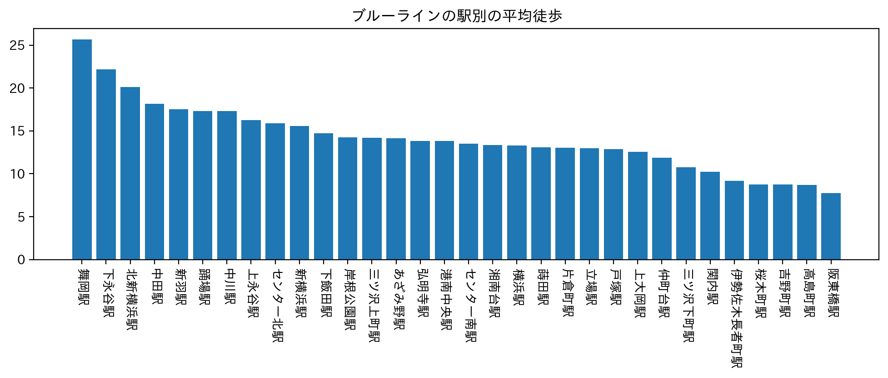

賃貸情報の分析
「女性におススメの駅」をテーマに、
築年数
徒歩の時間
をポイントに、路線をブルーライン、京急本線、東急東横線に絞り分析をした。
ブルーライン

ブルーラインでは、徒歩時間築年数ともに最短の阪東橋駅。
京急本線
京急本線では、築年数が最も浅く平均徒歩時間も5番目に短い黄金町駅。
東急東横線
東急東横線では、築年数が番目、徒歩時間が4番目の反町駅。
上記のグラフから、三つの路線の中では阪東橋駅が最もおススメの駅だと考える。
前のページに戻る
デザイン演習トップページ